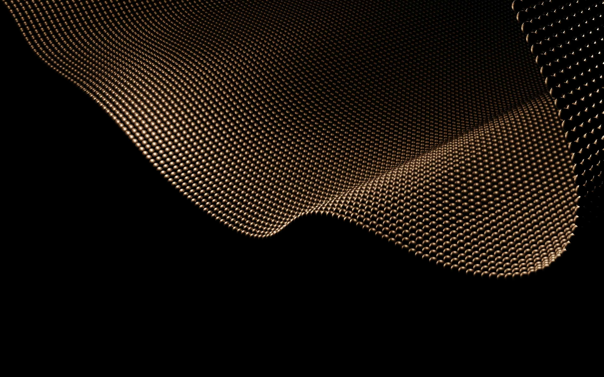

Guida metodologica alla progettazione dell'architettura di un sito perfetto, ottimizzato per SEO, GEO e intelligenza artificiale.

Un sito perfetto nel 2026 non è definito dalla sola estetica, ma dalla sua architettura sito web. Una struttura tecnica ben progettata garantisce visibilità nei motori di ricerca e comprensione da parte dell'intelligenza artificiale. Un sito ottimizzato per AI integra principi di SEO e GEO, organizzando contenuti, titoli e collegamenti secondo una gerarchia chiara e semanticamente coerente.
La distinzione tra estetica e performance è strutturale. Un sito può essere visivamente efficace, ma senza una solida architettura tecnica non garantisce visibilità, indicizzazione e comprensione semantica. La performance digitale dipende dalla progettazione gerarchica dei contenuti e dalla loro ottimizzazione per SEO e GEO.
SEO (Search Engine Optimization) è l'insieme delle tecniche volte a migliorare il posizionamento di un sito nei risultati dei motori di ricerca tradizionali come Google. Si basa su parole chiave, struttura dei contenuti, link interni ed esterni e qualità informativa.
Per approfondire consulta la sezione dedicata alla SEO.
GEO (Generative Engine Optimization) riguarda l'ottimizzazione dei contenuti per i motori generativi basati su intelligenza artificiale. L'obiettivo non è solo il ranking, ma la comprensione semantica e la citabilità del contenuto da parte dei sistemi AI.
Per approfondire consulta la sezione dedicata alla GEO.
Ottimizzazione per Google: mira al posizionamento nei risultati di ricerca attraverso ranking algoritmico, keyword mirate e segnali di autorevolezza.
Ottimizzazione per AI generativa: mira alla comprensione semantica del contenuto, alla sua chiarezza strutturale e alla possibilità che venga citato o sintetizzato dai modelli di intelligenza artificiale.
Nel 2026 un sito realmente performante deve soddisfare entrambi i modelli: visibilità nei motori di ricerca e interpretabilità nei sistemi generativi.
Nel contesto digitale del 2026, SEO e GEO non sono strategie alternative ma complementari. L'architettura di un sito web efficace deve garantire sia il posizionamento nei motori di ricerca tradizionali sia la comprensione da parte dei motori generativi basati su intelligenza artificiale. Separare queste due dimensioni significa limitare la visibilità e la diffusione dei contenuti.
Per approfondire i principi tecnici della SEO e le logiche dell'ottimizzazione per i motori generativi, consulta la sezione dedicata alla GEO. Comprendere entrambe le dimensioni è essenziale per progettare un sito realmente performante.
Un sito perfetto non nasce dall'estetica, ma dalla progettazione strutturale. Definire gerarchie, organizzare contenuti e integrare SEO e GEO significa costruire una base tecnica solida, capace di adattarsi all'evoluzione degli algoritmi e dei modelli di intelligenza artificiale.
Nel 2026 l'ottimizzazione non è un intervento successivo alla pubblicazione: è una fase progettuale. L'architettura del sito web determina visibilità, interpretabilità e autorevolezza digitale.
Progettare un sito oggi significa progettare un sistema informativo.
Comprendere SEO e GEO non è un'opzione tecnica, ma una competenza fondamentale per chiunque voglia costruire una presenza digitale solida e duratura.